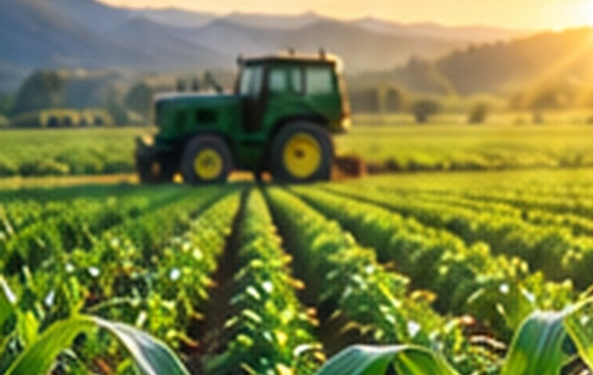
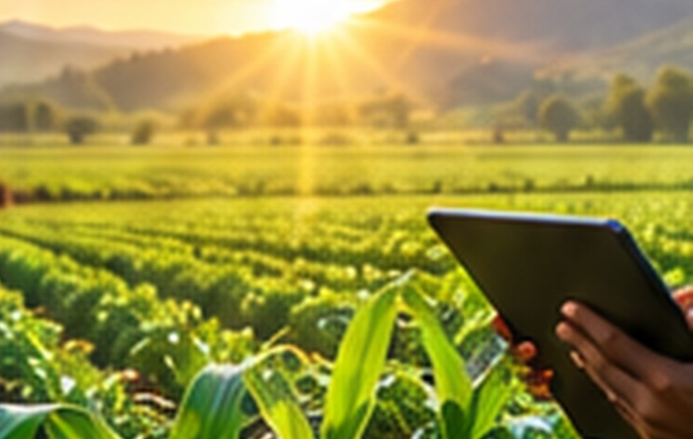
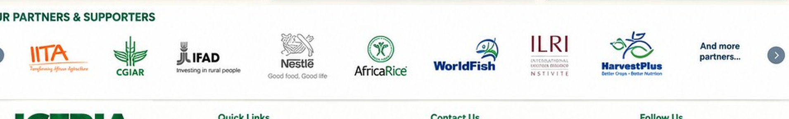

Evergreen ICERIA
The permanent identity and institutional platform for the International Conference and Expo on Research and Innovations in Agriculture.
Learn more →International Conference and Expo on Research and Innovations in Agriculture
Research. Innovation. Partnerships. Impact.
A continuing platform connecting agricultural research, innovation, policy, enterprise, investment and practical application for sustainable food systems.
ICERIA is more than a single event. It is a continuing platform for agricultural research, innovation, knowledge exchange, partnerships and practical impact. Each edition carries its own theme and programme while contributing to the same institutional journey.
The permanent identity and institutional platform for the International Conference and Expo on Research and Innovations in Agriculture.
Learn more →The current edition, with its own theme, programme, speakers, exhibition, partnerships and event information.
Explore ICERIA 2027 →A continuing space for research outcomes, innovation communication, knowledge exchange, partnerships and impact.
Explore resources →Bringing together the people, ideas and opportunities needed to move agricultural research and innovation toward practical application and impact.
A connected conference, expo, knowledge and partnership environment that can evolve with each edition.
High-level dialogue, keynote addresses, plenaries, research presentations and expert panels.
View programme →Research institutions, agribusinesses, technology startups, financial institutions and development programmes.
Explore Expo →Research outcomes, innovation communication, resources and knowledge exchange.
Explore knowledge →Institutional collaboration, strategic partnerships, sponsorship, exhibition and networking.
Partner with ICERIA →ICERIA provides a platform for research outcomes and innovations to be communicated, connected with enterprise and investment, and discussed in relation to validation, commercialisation, adoption and impact.

ICERIA's identity extends beyond the conference programme into exhibition, knowledge exchange, partner visibility, delegate experience and event communications.

The visual system can be carried across the main stage, speaker environment, exhibition spaces, directional signage, delegate materials and approved partner visibility.
Previous editions form part of the continuing ICERIA story; ICERIA 2027 is the current edition within that wider platform.


ICERIA's editorial and knowledge stream keeps the platform active between editions, while the current edition adds its own news, programme and event updates.
 Digital Agriculture
Digital Agriculture
Partnerships & ImpactICERIA brings together research and knowledge institutions, government and regulatory institutions, development and international organisations, private sector and agribusiness, finance and insurance, and media and knowledge partners.

Historical participation and relationships are presented by edition. ICERIA 2027 partner status is published only when formally confirmed.
View Partners & Institutions →Collaborate. Exhibit. Sponsor. Participate. Connect.